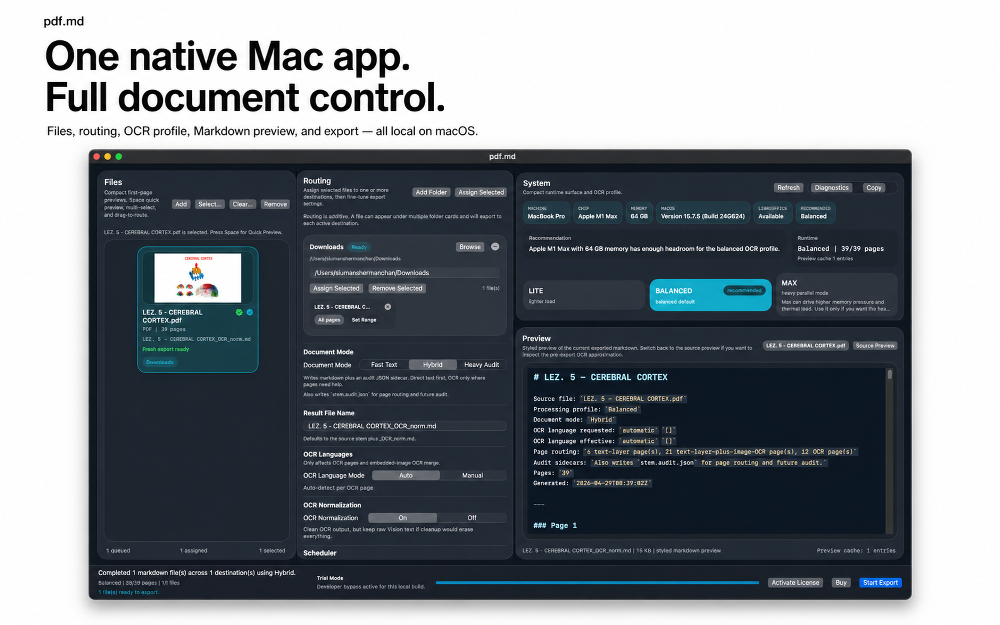
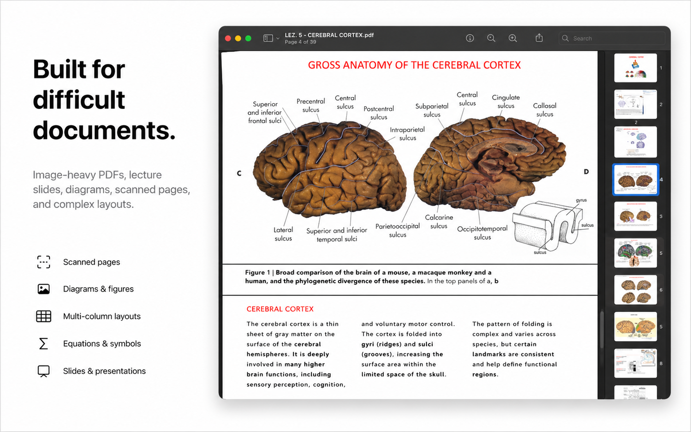
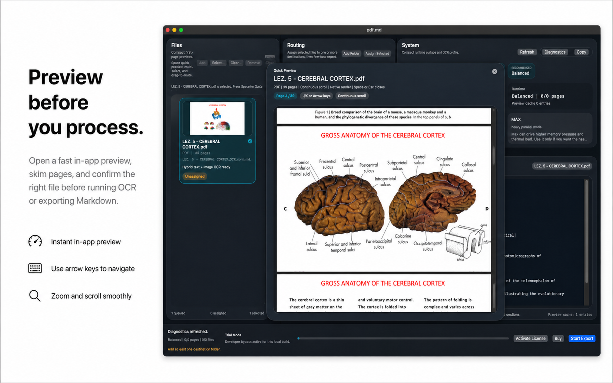
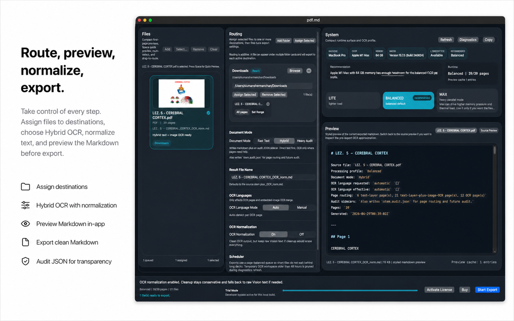
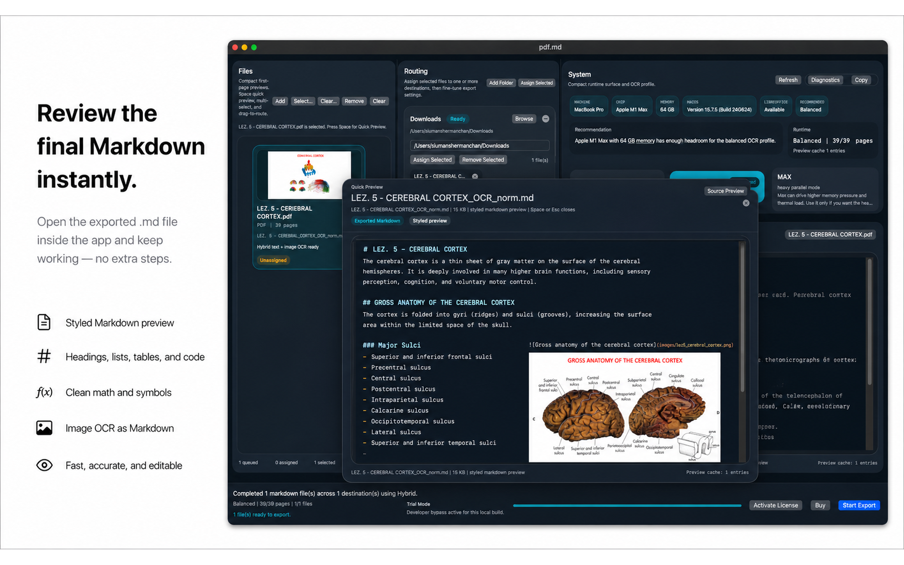

pdf.md is a native macOS SwiftUI app for fast, smooth document extraction with file preview, routing, Markdown review, LaTeX normalization, and direct .md export.
Native macOS SwiftUI app
pdf.md
Turn difficult PDFs, slides, and images into clean Markdown.
Requirement note
pdf.md processes selected files locally on your Mac.
MarkEdit is recommended for opening exported Markdown files.
Key features
- Native macOS SwiftUI interface
- Smooth source file preview popup
- Import and route files with control
- Fast Text, Hybrid, and Heavy Audit extraction modes
- Beautiful Markdown preview window
- LaTeX normalization for math-heavy content
- Export to clean Markdown





System behavior
Technical Specification
Platform
- OS
- macOS 14 or later recommended
- App type
- Native macOS app
- Framework
- SwiftUI
- Processing
- Local document processing
- Hardware
- Apple Silicon Mac recommended
Supported input
- PDF: .pdf
- Images: .png, .jpg, .jpeg, .tif, .tiff, .heic
- Presentations: .ppt, .pptx, .pptm, .pps, .ppsx, .odp
Core workflow
- User imports PDFs, images, or presentation files.
- Files are previewed, routed, and assigned to destinations.
- User selects Fast Text, Hybrid, or Heavy Audit mode.
- pdf.md extracts text, applies OCR where the selected mode requires it, and rebuilds Markdown.
- Optional LaTeX normalization can be applied.
- Final Markdown and any selected audit output are exported to the chosen destination.
Extraction modes
- Fast Text: direct text extraction only.
- Hybrid: direct text first, OCR where needed.
- Heavy Audit: full extraction with audit output.
OCR
- macOS Vision-based OCR
- Page-aware processing
- Image-region OCR
- Geometry-aware text ordering
- Multi-column layout handling
- Conservative cleanup fallback
Markdown output
- Clean .md export
- Structured text extraction
- Preserved headings where possible
- Bullet and paragraph reconstruction
- Markdown preview before export
LaTeX normalization
- Converts OCR-damaged mathematical text toward Markdown-safe LaTeX
- Normalizes common symbols, subscripts, superscripts, and equation fragments
- Designed for readable academic Markdown
File management
- Multi-file import
- Drag-and-drop workflow
- Destination routing
- Per-file export control
- Custom page or slide range support
Audit output
- Markdown output
- Audit JSON
- Audit HTML
- Rendered page assets
- OCR-region assets
- Extraction diagnostics
External dependency
Presentation fallback conversion may use LibreOffice when installed.
PDF and image workflows run natively on macOS.
Purchase and help
Sales & Support
Get pdf.md
pdf.md is available as a paid macOS app.
Buy pdf.mdRequirements before purchase
- macOS 14 or later recommended
- Apple Silicon Mac recommended
- Local files you are authorized to process
- LibreOffice optional for some presentation fallback workflows
- MarkEdit recommended for opening exported Markdown files
License & legal
View Terms View Privacy Policy View EULATechnical support
For setup issues, difficult files, extraction errors, or export failures:
When contacting support, include:
- macOS version
- Mac model or chip
- pdf.md version
- file type and extraction mode used
- screenshot or exact error message
- whether LibreOffice or MarkEdit is installed, if relevant
Common setup issues
| Issue | Check |
|---|---|
| Presentation fallback fails | Install LibreOffice and retry the presentation workflow. |
| Exported Markdown does not open | Install MarkEdit or open the .md file in another Markdown editor. |
| OCR output looks wrong | Try Hybrid or Heavy Audit mode and review the source preview. |
| Only part of a file exports | Check the selected page or slide range before export. |
| Large files feel slow | Use a smaller page range or a lighter extraction mode first. |